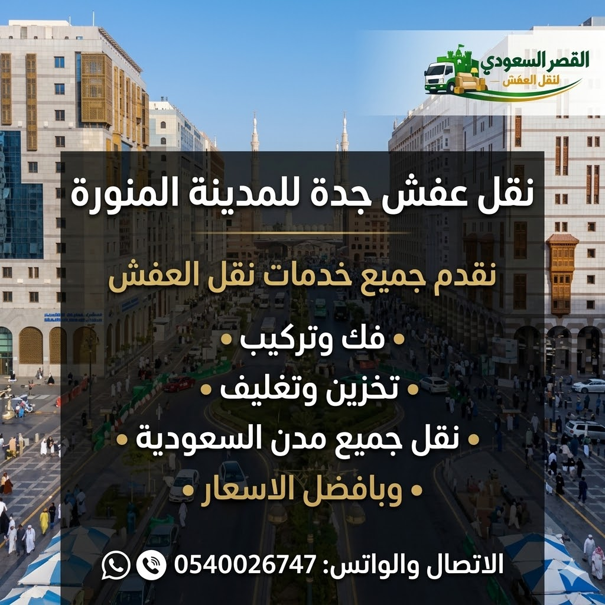

تفاصيل وتجهيزات مسار جدة - المدينة المنورة
يُعد خط جدة - المدينة المنورة من المسارات النشطة لدينا. نوفر سيارات مخصصة تسافر بشكل دوري لتلبية طلبات النقل السكني والتجاري بسلاسة.
اختيار المركبة المناسبة وتثبيت المنقولات بشكل صحيح هما سر نجاح النقل بين المدن. نضمن توفير سيارات دينا أو شاحنات مغلقة تناسب حجم عفشك لحمايته من العوامل الجوية على الطرق السريعة.
ضمان وحماية المنقولات
نحن في شركة القصر السعودي نلتزم بأعلى معايير الحماية. نقوم بتغليف العفش بأفضل المواد وتثبيته بعناية داخل الشاحنة لتقليل مخاطر التلف والاهتزاز أثناء الرحلة الطويلة. نحن مسؤولون عن تسليم أثاثك سليماً كما استلمناه.
مسار النقل البري من جدة إلى المدينة المنورة
شركة نقل عفش من جدة الى المدينة: الخدمة الشاملة والأولى لنقل الأثاث بين العروس والمدينة المنورة
تُعد خدمة شركة نقل عفش من جدة الى المدينة من أكثر الخدمات أهمية وحيوية للراغبين في الانتقال المباشر بين عروس البحر الأحمر جدة ومدينة الرسول الأعظم المدينة المنورة. إن رحلة الشحن بين المدينتين تبلغ مسافتها حوالي 420 كيلومتراً وتمر عبر طريق الهجرة السريع، وهي رحلة ممتدة تتطلب الاستعانة بـ أفضل شركة نقل عفش بجدة والمدينة تمتلك أسطولاً متطوراً من الشاحنات المغلقة والعمالة الفنية المدربة لضمان حماية المنقولات من حرارة الطريق والأتربة والاهتزازات. وتعتبر شركة القصر السعودي الخيار الرائد المعترف به في تقديم خدمات نقل العفش بين مدن المملكة العربية السعودية بأعلى مستويات الجودة والسلامة 100%.
معلومات رحلة النقل: جدة إلى المدينة المنورة
* المدة قد تختلف حسب حركة المرور والتوقفات وظروف الطريق.
إن تميزنا في تنفيذ رحلات نقل عفش من جدة للمدينة المنورة يعود إلى خبرتنا التشغيلية الواسعة في إدارة المنظومة بالكامل؛ حيث يتولى فريقنا الفني المتخصص فك الأثاث بدقة متناهية عبر خدمات فك وتركيب عفش بجدة والمدينة، يليه تطبيق تقنيات التغليف خماسي الطبقات الموضحة في صفحة تغليف العفش بجدة باستخدام البلاستيك الفقاعي والكرتون المضلع والنايلون الاستريتش، وصولاً إلى شحن الأثاث داخل دينا مغلقة ومؤمنة، وإعادة تركيبه بدقة بالغة في مقر سكنك الجديد بالمدينة المنورة.
تغطي حزم خدماتنا لـ نقل اثاث من جدة لمكة والمدينة جميع الاحتياجات السكنية والتجارية، تشمل نقل الشقق، الفلل والقصور الكبيرة من خلال خطط نقل الفلل والشقق والمكاتب بجدة والمدينة، إلى جانب نقل المعارض والمكاتب عبر صفحتنا المخصصة لـ نقل مكاتب بجدة والمدينة. ويعتمد نجارونا على دريلات لاسلكية متطورة لفك غرف النوم الإيطالية والمودرن والمطابخ دون خدش الأخشاب، وهو ما نستعرضه بالتفصيل في صفحة فك وتركيب غرف النوم بجدة والمدينة.
كذلك نتيح للعملاء ميزة التنفيذ الفوري والسريع؛ حيث يمكن لفريقنا البدء في فك وتحميل العفش بجدة صباحاً والوصول للمدينة المنورة وإتمام التركيب الشامل في نفس اليوم خلال 4 إلى 5 ساعات، مع تقديم تقارير تتبع عبر الـ GPS وإتاحة دليلنا المعرفي عبر مدونة نقل العفش بجدة والمدينة للاطلاع على كافة الإرشادات الهامة.
تلتزم شركة نقل عفش من جدة الى المدينة بتقديم عقد نقل رسمي وضمان كتابي ضد الكسر أو الخدش، مع استعراض أرخص الأسعار والخصومات التنافسية اليومية المتاحة عبر صفحة أسعار نقل العفش بجدة والمدينة. اتصل بنا فوراً عبر الرقم 0540026747 واحصل على معاينة مجانية وخصم فوري 30% لرحلتك اليوم.
هل ترغب في طلب دينا نقل عفش من جدة الى المدينة فورا؟
شاحناتنا وطواقمنا الفنية جاهزة للتحرك فوراً لخدمتك خلال ساعة واحدة عبر طريق الهجرة!

التخطيط واللوجستيات لمسار طريق الهجرة السريع بين جدة والمدينة (420 كم)
يتطلب مسار النقل بين جدة والمدينة المنورة عبر طريق الهجرة السريع (420 كم) تخطيطاً لوجستياً دقيقاً يتعامل مع العوامل المناخية والحرارة الصحراوية التي تميز هذه الرحلة الممتدة. وتطبق شركة القصر السعودي بروتوكولات شحن صارمة تبدأ باختيار أنسب الأوقات للانطلاق في الساعات المبكرة من الصباح لتجنب الذروة الحرارية والازدحام المروري، وتسهيل الوصول إلى المدينة المنورة في الوقت المحدد.
تلتزم افضل شركة نقل عفش بجدة والمدن بفحص كافة شاحنات الدينا والتأكد من سلامة المحركات وإطارات الشاحنات ونظم التبريد والتثبيت الهيدروليكي داخل الصندوق. ويتم التأكد من إحكام إغلاق الصناديق لمنع تسرب الغبار والأتربة أثناء السير على الطريق السريع، مما يحافظ على الأثاث والمفروشات والأجهزة الإلكترونية بنظافتها وجودتها الأصلية.
أثناء عملية التحميل بجدة، يتبع عمال شركة القصر السعودي قواعد التوزيع المتوازن للأحمال؛ حيث يتم رصف الدواليب والأجهزة الكهربائية الثقيلة في أسفل الصندوق وتثبيتها بالحبال وأحزمة الشد المقاومة للاهتزاز، وتوضع قطع الأثاث المغلفة بالكرتون والفقاعات في الأعلى للحفاظ على ثبات الحمولة طوال مدة الرحلة، وهو ما توضحه صفحة تغليف العفش بجدة والمدينة.
علاوة على ذلك، نوفر حلول الحفظ والتخزين المؤقت للعملاء الراغبين في تأجيل الاستلام لحين الانتهاء من تجهيز المسكن بالمدينة المنورة عبر صفحتنا لـ تخزين العفش بجدة والمدينة؛ حيث تحفظ المنقولات في مستودعات مكيفة ومؤمنة بالكامل تضمن حمايتها المطلقة.
تضمن لك خطتنا اللوجستية وصول عفشك وسكنك الجديد بالمدينة المنورة دون أي تعب أو عناء. تواصل معنا فوراً على الرقم 0540026747 واحجز رحلتك اللوجستية المباشرة اليوم.
خدمات الفك والتركيب والتغليف الحامي المخصصة لرحلات جدة – المدينة المنورة
تمثل عمليات الفك والتغليف الضمان الحقيقي لسلامة العفش أثناء تنقله في رحلة شركة نقل عفش من جدة الى المدينة. وتخصص شركة القصر السعودي نجارين وفنيين متمرسين لفك كافة مكونات الأثاث المنزلي والمكتبي، بما فيها غرف النوم الكبيرة، الدواليب، الأسرّة السحابية، المطابخ، الشاشات، والمكيفات.
تعتمد شركة فك وتركيب عفش بجدة والمدينة نظام الترقيم الدقيق والأكياس البلاستيكية الممغنطة لحفظ المسامير والمفصلات لكل قطعة أثاث على حدة، مما يمنع ضياع أي جزء صغير ويضمن إعادة تجميعها بالكامل بالمدينة المنورة بنفس الجودة ومتانة المصنع الأصلية، وهو ما تبرزه صفحة فك وتركيب غرف النوم بجدة والمدينة.
وفيما يتعلق بمواد التغليف، تستخدم شركة تغليف عفش بجدة التابعة للقصر السعودي مواد حماية خماسية الطبقات تشمل البلاستيك الفقاعي المقوى لحماية الزجاج والرخام والشاشات، الكرتون المضلع لحماية حواف الخشب، الفوم العازل للصدمات، والنايلون الاستريتش لحماية الأثاث من الأتربة والرطوبة أثناء الشحن الصحراوي عبر طريق الهجرة.
كما نتيح خدمات فك وتثبيت المكيفات بجميع أنواعها (سبلت وشباك) مع حفظ غاز الفريون واختبار كفاءة التبريد بالمدينة المنورة فور التركيب عبر فنيين معتمدين، تصفح تفاصيل خدماتنا في صفحة خدمات النقل والفك والتغليف بجدة والمدينة.
نحن نضمن لك السلامة المطلقة لكافة منقولاتك مع تقديم عقد ضمان رسمي يحميك من أي خسائر. اتصل بنا الآن عبر الرقم 0540026747 واستفد من عروض الفك والتغليف اليوم.
أسطول دينا نقل عفش من جدة الى المدينة والشاحنات المغلقة المجهزة
تشكل الشاحنات الحديثة الدعامة الأساسية لإنجاز عمليات الشحن بين المدن بنجاح وسرعة. وتوفر شركة القصر السعودي أحدث أسطول من شاحنات دينا نقل عفش من جدة الى المدينة المصممة خصيصاً لنقل الأثاث عبر المسافات الطويلة. تتميز دينا الشحن بأنها مغلقة بالكامل ومحكمة الإغلاق لمنع تسرب الحرارة أو الأتربة إلى المنقولات أثناء السير على طريق الهجرة السريع.
تتنوع أحجام الدينات لدينا لخدمة مختلف المساحات؛ فنوفر دينا نقل صغيرة ومتوسطة (جامبو 4.5 متر) لشحن الشقق والمكاتب الصغيرة، وشاحنات كبيرة (6 متر و12 متر) المخصصة لشحن الفلل الكاملة والقصور والمعارض والمستودعات التجارية كما تفصله صفحة نقل العفش بجدة والمدينة.
صناديق الشاحنات مبطنة من الداخل بالمطاط والسجاد لمنع احتكاك القطع، ومزودة بأحزمة تثبيت قوية تضمن عدم تحرك أو اهتزاز الكراتين والأجهزة أثناء الرحلة. كما تتوفر دينا مجهزة بأوناش هيدروليكية لتنزيل العفش الثقيل بجدة ورفعه بسلاسة في العمائر المرتفعة بالمدينة المنورة دون استخدام السلالم.
ونتيح للعملاء خيار **الشحن المباشر الخصيص** لشحن العفش والتوصيل الفوري بنفس اليوم، أو **الشحن المجمّع الاقتصادي** للقطع المحدودة والغرف المنفردة لمن يرغب في الاستفادة من أرخص اسعار نقل العفش من جدة للمدينة وتوفير تكاليف الشحن.
مهما كان حجم منقولاتك، فإن دينا نقل عفش من جدة للمدينة المنورة جاهزة للتحرك فوراً على مدار 24 ساعة. اتصل بنا على 0540026747 واحجز شاحنتك الآن.
تغطية أحياء جدة والوصول السريع لكافة أحياء ومناطق المدينة المنورة
تغطي المنظومة التشغيلية لشركة القصر السعودي كافة أحياء مدينة جدة للتحميل السريع، مع إتاحة التوصيل المباشر والتركيب الشامل بجميع أحياء ومناطق المدينة المنورة. يمكنك التصفح الكامل عبر صفحة الأحياء والمدن المخدومة.
في مدينة جدة، نغطي الأحياء الشمالية والوسطى والجنوبية؛ بما فيها حي الشاطئ، حي الصفا، حي النعيم، حي الحمدانية، حي المروة، حي الروضة، حي الزهراء، حي السلامة، حي البوادي، حي النسيم، حي النخيل، حي السامر، حي الفيحاء، وحي العزيزية الموضحة بصفحة نقل عفش جدة.
وعند الوصول للمدينة المنورة، نغطي كافة الأحياء والمناطق؛ بما فيها حي العزيزية، حي العريض، حي الهجرة، حي باقدو، حي الحزام، حي الشظاة، حي الخالدية، حي العاقول، حي سيد الشهداء، وحي الدفاع، بالإضافة إلى الأحياء القريبة من الحرم النبوي الشريف وتوفير المعدات والدينات المناسبة للوصول إلى الأزقة والمناطق المزدحمة.
يتكفل فريقنا بتنزيل العفش ورفعه للمنازل والعمائر وتركيب جميع الغرف والمطابخ والستائر والمكيفات بإنهاء عمل محترف ونظيف 100%. يمكنك الاطلاع على تفاصيل التغطية عبر دليل تغطية أحياء المدينة المنورة وجدة.
اتصل بنا فوراً على الرقم 0540026747 واستفد من سرعة التوصيل والتركيب بجميع أحياء المدينة المنورة اليوم.
أسعار شركة نقل عفش من جدة الى المدينة – جدول الشفافية التامة والعروض
تعتمد شركة القصر السعودي خطة أسعار عادلة واقتصادية لـ اسعار نقل العفش من جدة للمدينة تعتمد على الشفافية المباشرة بدون أي تكاليف مستترة بعد الاتفاق. تتحدد التكلفة بناءً على كمية العفش، عدد الغرف، نوع التغليف، ودور السكن بجدة والمدينة.
| حجم الشقة / العفش المنقول | الخدمات المدمجة بالباقة | نوع الشاحنة والطاقم | الوقت التقديري للوصول | السعر التنافسي لشركة القصر |
|---|---|---|---|---|
| نقل استوديو / غرفة نوم واحدة ملحقة | فك + تغليف عادي + نقل + تركيب | دينا صغيرة + 2 عمال | 4 - 5 ساعات | 700 - 900 ريال |
| نقل عفش شقة 3 غرف وصالة كاملة | فك غرفتين + تغليف حامي + تركيب كامل بالمدينة | دينا جامبو مغلقة + 4 عمال + نجار | 4.5 - 5.5 ساعات | 1400 - 1800 ريال |
| نقل عفش شقة 5 غرف وصالة كبيرة | فك شامل + تغليف كرتون وفوم + تركيب بالمدينة | 2 دينا مغلقة + 6 عمال + 2 نجارين | 5 - 6 ساعات | 2200 - 2800 ريال |
| نقل فيلا كاملة أو قصر بجدة الى المدينة | فك فني شامل + تغليف فاخر + ونش هيدروليكي | تريلا كبيرة + طاقم 8 عمال ونجارين | نفس اليوم (6-8 ساعات) | تبدأ من 4000 ريال |
| نقل مكتب أو مقر تجاري من جدة للمدينة | فك مكاتب وقواطع + تغليف أجهزة + تركيب بالمدينة | دينا مغلقة + طاقم مكاتب متقدم | 4.5 - 5.5 ساعات | 1600 - 2400 ريال |
| نقل عفش مجمّع (غرفة واحدة أو قطعتين) | تغليف مقوى + نقل مجمع + تركيب بالمدينة | شاحنة مجمعة مؤمنة | نفس اليوم / اليوم التالي | 500 - 800 ريال |
نقدم خصومات يومية تصل إلى 30% للحجوزات المبكرة. يمكنك الاطلاع أيضاً على مقالنا الخاص حول أسعار نقل العفش الاقتصادية بين جدة والمدينة للحصول على أحدث العروض.
جداول المقارنة الشاملة: شركة القصر السعودي مقابل الناقلين الفرديين والعمالة العشوائية
تستعرض جداول المقارنة التالية الفرق الجوهري بين الاستعانة بشركة القصر السعودي المعتمدة وبين العمالة العشوائية عند نقل الأثاث من جدة إلى المدينة المنورة عبر طريق الهجرة:
1. مقارنة تجهيز الشاحنات والوصول السريع للمدينة المنورة:
| معيار المقارنة | شركة القصر السعودي لنقل العفش | العمالة والناقلون العشوائيون |
|---|---|---|
| نوع وحالة الشاحنة | دينا مغلقة ومبطنة تحمي العفش من أتربة وحرارة طريق الهجرة | دينا مفتوحة تعرض العفش للأتربة والأمطار والحرارة |
| معرفة أحياء ومناطق المدينة | سائقون محترفون يجيدون الوصول لجميع أحياء المدينة المنورة والحرم | صعوبة الوصول لمناطق المدينة والتأخر على العميل |
2. مقارنة التغليف وحماية المنقولات:
| الأسلوب والمواد | شركة القصر السعودي لنقل العفش | العمالة والناقلون العشوائيون |
|---|---|---|
| مواد التغليف المستعملة | تغليف خماسي (فوم، فقاعات، كرتون مقوى، نايلون استريتش) | تغليف بطبقة نايلون خفيفة فقط تسبب خدش وتلف الخشب |
| حفظ البراغي والمفصلات | أكياس بلاستيكية ممغنطة مكتوب عليها اسم كل قطعة بالتفصيل | تجميع المسامير في كرتون عشوائي يتسبب في ضياعها |
3. مقارنة الفك والتركيب والتنفيذ:
| النتائج الفنية | شركة القصر السعودي لنقل العفش | العمالة والناقلون العشوائيون |
|---|---|---|
| طاقم النجارة والتكييف | نجارون وفنيو تكييف متمرسون لأثاث إيكيا والمطابخ والمكيفات | عمالة عشوائية تستخدم مفكات قديمة قد تكسر الخشب |
| موازين الاستقامة بالليزر | استخدام ميزان ليزر مائي لضبط استقامة الدواليب والمطابخ بالمدينة | تركيب عشوائي يتسبب في ميلان الدواليب وتلف الأبواب |
4. مقارنة الضمان والتعهد الرسمي:
| التعهد والمسؤولية | شركة القصر السعودي لنقل العفش | العمالة والناقلون العشوائيون |
|---|---|---|
| عقد الضمان المكتوب | عقد نقل رسمي وضمان مكتوب يمتد لـ 3 أشهر ضد التلف والكسر | عدم وجود أي ضمان وإخلاء المسؤولية فور استلام المبلغ |
آراء وتقييمات عملائنا في نقل العفش من جدة إلى المدينة المنورة
نستعرض لكم جانباً من تقييمات عملائنا الكرام الذين جربوا خدمات النقل المباشر والسريع بين جدة والمدينة المنورة:
المهندس فهد الأحمدي
حي الحمدانية (جدة) ➔ حي العزيزية (المدينة)"نقلت عفش شقتي 5 غرف من جدة للمدينة المنورة عبر طريق الهجرة. طاقم القصر السعودي بدأ الفك بجدة في الصباح ووصلوا للمدينة بعد العصر وركبوا كل حاجة بمكانها بنفس اليوم. تجربة ممتازة أنصح بها."
الأستاذ خالد الرشيدي
حي الزهراء (جدة) ➔ حي العريض (المدينة)"افضل شركة نقل عفش من جدة الى المدينة المنورة بدون منازع. التعامل راقي جداً والتغليف خماسي حمى الخشب والزجاج تماماً من أتربة الطريق. ربي يوفقكم."
الدكتورة نورة الجهني
حي الشاطئ (جدة) ➔ حي باقدو (المدينة)"النجارين محترفين جداً وركبوا دولاب إيكيا وغرفة النوم بالميزان المائي بالمدينة. العمالة محترمة جداً ومواعيد الانطلاق والوصول كانت بالدقيقة."
الأستاذ طارق العمري
حي المروة (جدة) ➔ حي الهجرة (المدينة)"نقلت أثاث مكتبي وشركتي من جدة للمدينة. الدينا كانت مغلقة ونظيفة للغاية وفنيو التكييف ركبوا المكيفات وشغلوها فوراً. شركة ممتازة وأسعارها منافسة."
الأسئلة الشائعة عن شركة نقل عفش من جدة الى المدينة (15 سؤال وجواب تفصيلي)
إليك إجابات تفصيلية عن أكثر الأسئلة شائعة بخصوص خدمات نقل العفش والأثاث من جدة إلى المدينة المنورة:
تستغرق رحلة الشاحنة من جدة إلى المدينة المنورة حوالي 4 إلى 5 ساعات عبر طريق الهجرة السريع (420 كم)، ويتم إنجاز الفك والتحميل بجدة صباحاً ثم التوصيل والتركيب الكامل بالمدينة المنورة في نفس اليوم.
تبدأ الأسعار المنافسة من 700 إلى 900 ريال للشقق الصغيرة والاستوديوهات، وتتراوح بين 1400 إلى 2600 ريال للشقق الكبيرة والفلل، وتعتمد على حجم العفش الموضح بجدول أسعار نقل العفش بجدة والمدينة.
نعم، نقدم شهادة ضمان كتابية وضمان شامل ضد الكسر أو التلف أو الخدش طوال مسار الشحن من جدة إلى منزلك الجديد بالمدينة المنورة.
بالتأكيد، يتولى فريق النجارين والفنيين المتخصصين فك غرف النوم والمطابخ والمكيفات بجدة، وإعادة تركيبها وتثبيتها بدقة بالغة بالمدينة المنورة عبر صفحة فك وتركيب عفش بجدة والمدينة.
نستخدم شاحنات دينا مغلقة بالكامل ومبطنة من الداخل، مع تغليف الأثاث بـ 5 طبقات من البلاستيك الفقاعي والكرتون المقوى والنايلون الاستريتش لمنع وصول الأتربة والحرارة عبر صفحة تغليف العفش بجدة والمدينة.
نعم، نغطي كافة أحياء ومناطق المدينة المنورة كالعزيزية، العريض، الهجرة، باقدو، الحزام، الشظاة، الخالدية، العاقول، والأحياء المجاورة للحرم النبوي الشريف عبر سكشن الأحياء المخدومة.
نعم، يرافق طاقمنا فنيون متخصصون في فك المكيفات وتأمين غاز الفريون بجدة، ثم إعادة تركيبها واختبار كفاءة التبريد بمقر السكن بالمدينة المنورة.
خدماتنا متاحة على مدار 24 ساعة طوال أيام الأسبوع، ونستقبل طلبات النقل الفوري العاجل للتحرك خلال ساعة واحدة من الاتصال.
نعم، نوفر مستودعات مؤمنة ومكيفة ومراقبة بالكاميرات في جدة والمدينة لحفظ الأثاث للفترات التي يرغب بها العميل قبل استلام منزله بصفحة تخزين العفش بجدة والمدينة.
نستخدم نظام ترقيم القطع والأكياس الممغنطة لحفظ المفصلات والبراغي، ويقوم نجارونا المحترفون بتركيب الأثاث بالمدينة باستخدام الموازين المائية المتقدمة الموضحة بصفحة فك وتركيب غرف النوم بجدة والمدينة.
نعم، نوفر أوناش رفع هيدروليكية حديثة لتنزيل الأثاث الثقيل من مباني جدة ورفعه لسائر الأدوار العليا بالعمائر السكنية بالمدينة المنورة دون استخدام السلالم الضيقة.
نعم، نقدم حلول نقل المقرات التجارية والمكاتب والشركات والمستشفيات مع تفكيك القواطع وتغليف أجهزة الكومبيوتر والملفات عبر صفحة نقل مكاتب بجدة والمدينة.
نعم، نتيح خيار الشحن المجمّع للغرف المنفردة أو الأجهزة الكهربائية بسعر اقتصادي منخفض لتوفير التكاليف على العملاء.
تتميز شركة القصر السعودي بالسرعة في نفس اليوم عبر طريق الهجرة، الشاحنات المغلقة الحديثة، الضمان المكتوب، والأسعار الاقتصادية المنافسة.
يمكنك الاتصال المباشر برقم الهاتف 0540026747، أو التواصل عبر الواتساب للحصول على معاينة مجانية وخصم فوري يصل إلى 30% عبر صفحة عن الشركة.
احجز أفضل شركة نقل عفش من جدة الى المدينة المنورة الآن!
احصل على خصم 30% للحجز اليومي واستفد من رحلة شحن سريعة بنفس اليوم عبر طريق الهجرة بضمان مكتوب ومعاينة مجانية!